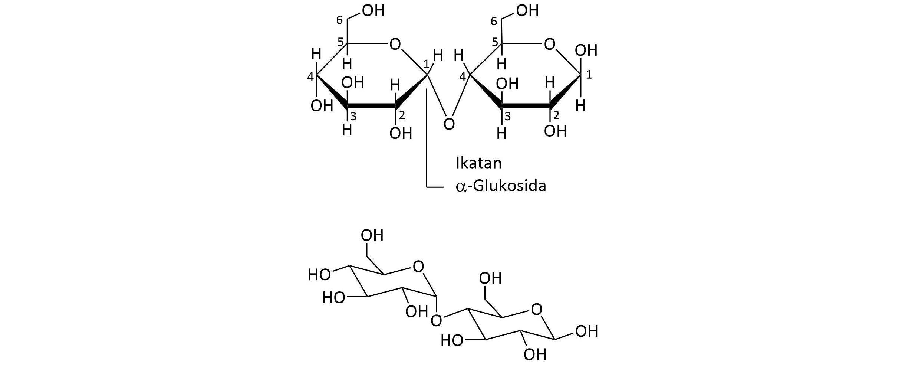
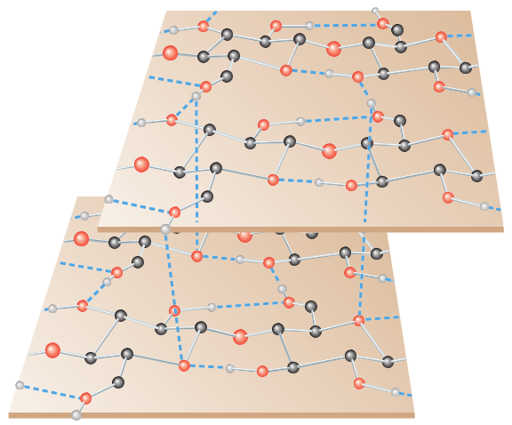

Sukrosa adalah disakarida yang banyak ditemui, terdapat
dalam semua tanaman yang berfotosintesis dan terdapat dalam
tebu dan gula bit. Struktur sukrosa adalah sebagai berikut:
Dua Representasi Rumus (+)-sukrosa (α-D-glukopiranosil,
β-D-fruktofuranosida)
b. Maltosa
Ketika pati dihidrolisis oleh enzim diastase, satu produk
disakarida diketahui sebagai maltosa.

Dua Representasi Struktur Anomer β dari (+)-maltosa,
4-O-( α-D-glukopiranosil)- β-D-glukopiranosa
c. Selobiosa
Selobiosa seperti maltosa merupakan gula pereduksi apabila
dihidrolisis menggunakan katalis asam akan menghasilkan dua
mol ekuivalen D-glukosa. Selobiosa juga mengalami mutarotasi
dan membentuk monofenilosazon. Dari proses metilasi kita
dapat mengetahui bahwa C1 pada satu glukosa terhubung dengan
ikatan glikosida dengan C4 pada glukosa lainnya dan kedua
cincinnya adalah cincin 6 karbon. Tetapi tidak seperti
maltosa, selobiosa dapat dihidrolisis oleh enzim
β-glukosidase tetapi tidak bisa oleh enzim α-glukosidase.
Itu menunjukan bahwa ikatan glikosidanya merupakan β.
Dua Representasi dari Anomer β selobiosa,
4-O-(β-D-glukopiranosil)-β-D-glukopiranosa
d. Laktosa
Laktosa merupakan disakarida yang terdapat dalam susu yang
dihasilkan oleh manusia, sapi dan hampir semua mamalia.
Laktosa merupakan gula pereduksi yang dapat dihidrolisis
menjadi D-glukosa dan D-galaktosa. Ikatan glikosidanya
adalah β.
Dua representasi anomer β laktosa, 4-O-(
β-D-galaktopiranosil)-β-D-glukopiranosa
B. Polisakarida
Polisakarida juga dikenal sebagai glikan, terdiri atas
monosakarida-monosakarida yang saling terhubung melalui ikatan
glikosida.
Polisakarida merupakan polimer yang tersusun atas satu jenis
monosakarida maka disebut homopolisakarida.
Polisakarida yang tersusun atas berbagai jenis monosakarida
disebut heteropolisakarida. Homopolisakarida
juga diklasifikasikan berdasarkan monosakarida penyusunnya,
polisakarida yang tersusun atas glukosa disebut glukan,
polisakarida yang tersusun atas galaktosa disebut galaktan, dan
seterusnya.
Empat polisakarida penting yang merupakan suatu glukan adalah
pati, glikogen, selulosa dan kitin.
a. Pati
Simaklah video tentang pati berikut.
Memanaskan pati dengan air akan menghasilkan suspensi koloid
yang dua komponen utamanya dapat diisolasi. Komponen pertama
disebut amilosa dan yang lainnya disebut
amilopektin. Kebanyakan pati menghasilkan
10-20% amilosa dan 80-90% amilopektin.
Amilosa khasnya terdiri atas lebih dari 1000 unit
D-glukopiranosida yang terhubung dengan ikatan α antara C1
unit pertama dengan C4 unit sampingnya.
Struktur Parsial Amilosa, Suatu Polimer D-Glukosa yang
Tidak Bercabang yang Terhubung dalam Ikatan Glikosidik
(1 🡪 4)
Apabila melihat ukuran cincin unit glukosa dan konfigurasi
ikatan glikosida antara mereka, amilosa menyerupai maltosa.
Rantai unit D-glukosa dengan ikatan α-glikosida pada amilosa
penyusunannya cenderung digambarkan seperti helix.
Hasil penyusunan ini merupakan pemadatan ukuran amilosa
ketika ukurannya cukup besar (150.000-600.000).
Ikatan α(1 🡪 4) pada Amilosa Menyebabkannya Berbentuk
Heliks Kidal
Struktur amilopektin sama dengan amilosa (yaitu pada ikatan
α 1-4) diluar itu rantai amilopektin bercabang. Cabangnya
terdapat antara C6 pada satu unit glukosa dan C1 unit
lainnya dan itu terjadi antara 20-25 unit glukosa.
Struktur Parsial Amilopektin
Pengukuran secara fisik menunjukan bahwa amilopektin
memiliki berat molekul 1-6 juta. Jadi amilopektin tersusun
atas ribuan rantai yang terhubung pada 20-25 masing masing
unit glukosa.
b. Glikogen
Simaklah video tentang glikogen berikut.
Glikogen memiliki berat molekul yang tinggi, penelitian
menunjukan berat molekul glikogen 100 juta. Ukuran dan
struktur glikogen sangat sesuai dengan fungsinya sebagai
cadangan karbohidrat untuk hewan.
Ada enzim di dalam sel yang mengkatalisasi reaksi yang
digunakan unit glukosa ketika terlepas dari (atau melekat
pada) glikogen. Enzim ini beroperasi pada kelompok akhir
glikogen dengan menghidrolisis (atau membentuk) ikatan
glikosidik α(1🡪4). Karena glikogen sangat bercabang,
sejumlah besar kelompok akhir glikogen yang tersedia di mana
enzim ini dapat beroperasi. Pada saat yang sama konsentrasi
keseluruhan glikogen (dalam mol per liter) cukup rendah
karena berat molekulnya yang sangat besar.
c. Selulosa
Simaklah video tentang selulosa berikut.
Ketika kita memeriksa struktur selulosa, kita menemukan
contoh polisakarida lainnya di mana alam telah mengatur unit
monomer glukosa dengan cara yang sesuai dengan fungsinya.
Selulosa mengandung unit D-glukopiranosa yang terhubung pada
ikatan (1🡪4) dalam rantai yang tidak bercabang. Tidak
seperti pati dan glikogen, ikatan pada selulosa adalah
β-glikosidik.
Sebagian dari Rantai Selulosa. Ikatan Glikosidik β (1 🡪
4)
Ikatan β-glikosidik pada selulosa membuat rantai dasar
selulosa linier, tidak melilit menjadi heliks seperti pada
polimer glukosa ketika terhubung pada ikatan α(1🡪4). Susunan
ikatan unit β-glukosa pada selulosa menyajikan distribusi
gugus –OH diluar masing masing rantai. Ketika dua atau lebih
rantai selulosa melakukan kontak, gugus hidroksil terletak
“zip” pada rantai bersama membentuk ikatan hidrogen.
Menyatukan banyak rantai selulosa dalam hal ini menjadikan
polimer yang sangat tidak larut, kaku, dan berserat yang
ideal sebagai bahan dinding sel untuk tanaman.

Sebuah Usulan Struktur Selulosa
d. Kitin
Polisakarida bangunan utama dari hewan berkaki banyak
(misalnya, ketam dan serangga) adalah kitin (chitin).
Diperkirakan bahwa 109 ton kitin dibiosintesis
tiap tahun. Kitin adalah polisakarida linear yang mengandung
N-asetil-D-glukosa terikat -β. Pada hidrolisis, kitin
menghasilkan 2-amino-2-deoksi-D-gukosa. (gugus asetat
terlepas dalam tahap hidrolisis), dalam alam, kitin terikat
pada bahan bukan polisakarida (protein dan lipid).